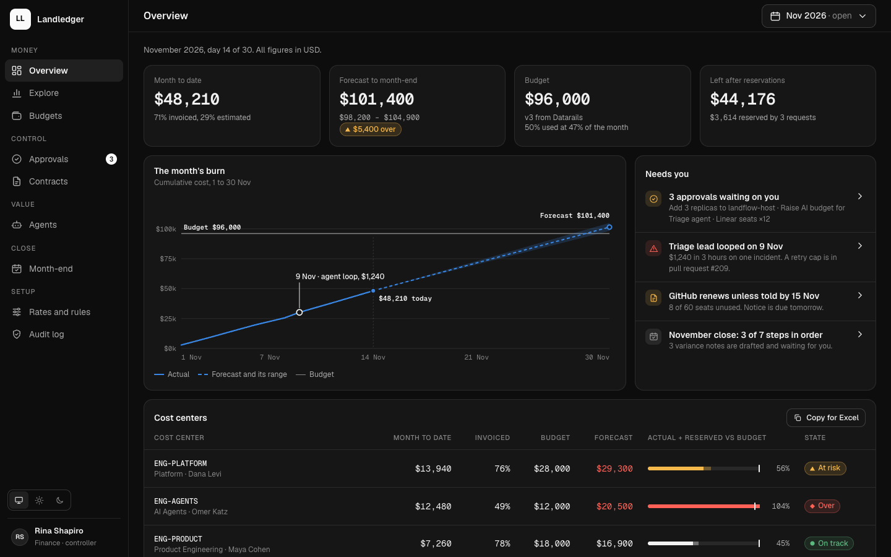
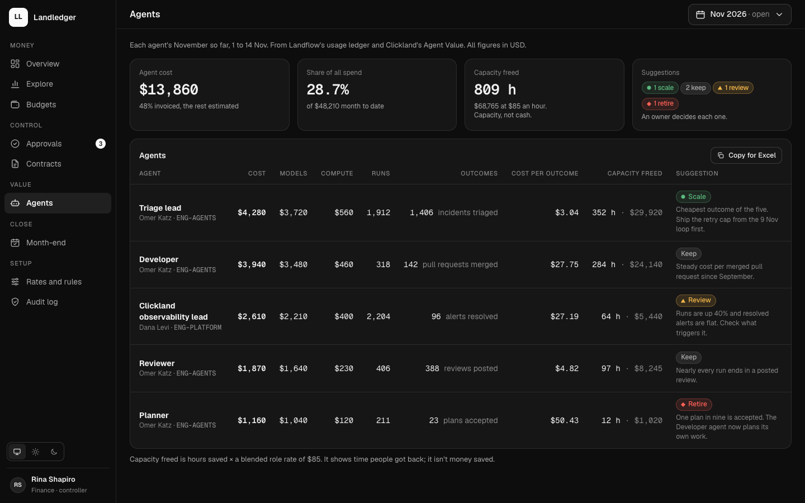

Landledger: the plan, the console and how it meets the land family
You chose a dedicated project. Here is how to build it, what the finance team will use, and how it connects to Landflow, Clickland, Landbright, Landfall, Landlens and Datarails.
In short
- What it is: the cost subledger for technology and AI spend. Every cost gets an owner and a P&L class, spend above a threshold gets a named approver, and each month comes with its explanation. The accounting system and Datarails stay the books.
- How it's built: Clickland's stack (Fastify, zod, Postgres, React, MCP Apps), its own repo at
~/WorkSpace/landledger, local on OrbStack, a fake Datarails. - How it connects: it pulls usage from Clickland and Landflow, prices it with a finance-owned rate card, and sends cost metrics back to Clickland. Approvals go through Landflow, with people from Landbright. Month-end goes to Datarails.
- First value: wave 1 shows last month's AI and cluster cost per team against budget, with an Excel export.
The plan
Seven principles
- Agents request; people decide. No key, token or tool lets an agent approve.
- Every figure says estimated or invoiced. Notional cluster cost never goes to the books as actuals.
- Money is exact: integer minor units with a currency, decimal rates, FX by date.
- Nothing is edited. Records, decisions and the audit log are appended; closed months lock.
- It reads the family; nobody depends on it. If it's down, flows wait and nothing else breaks.
- Local only, fakes first. Real outside services wait for your decision.
- Spec-driven, as Landbright is. Each feature starts as a spec, a plan and tasks; docs move with the code.
Wave 0 · Study and scaffold
start hereA Craft Anything study of OpenCost (allocation of idle and shared cost, custom pricing for on-premises clusters) and the FOCUS 1.4 columns. The monorepo, design tokens, compose infrastructure and telemetry to Clickland. The first three specs: money and records, ingest, allocation.
Wave 1 · See the spend
first valueCost records, rate card v1, allocation with P&L class and capitalisable flag, ingest from Landflow (AI usage) and Clickland (a new usage-totals route), budgets from a CSV, the Overview, Explore and Budgets screens, Excel export, Landbright sign-in, the first MCP tools, cost metrics to Clickland.
Finance gets: last month's AI and cluster cost per team against budget, a daily figure since, a file for Excel.
Wave 2 · Control the spend
approvalsRequests, policies, decisions and reserved budget; requester ≠ approver; the hash-chained audit log and auditor role; the weekly exceptions report. The Landflow plugin, approvals in Slack and email, approved AI budgets written to Landflow's caps. Flows: infrastructure change and AI budget.
Finance gets: spend above the threshold carries a named approver; spend that skipped one is listed weekly.
Wave 3 · Plan and reconcile
forecastInvoice import and reconciliation of AI usage, driver-based forecasts, cost anomalies as Clickland alerts, agent cost and capacity freed, contracts and renewals, the tool-or-seat flow with Landbright access requests.
Finance gets: AI cost tied to invoices, a forecast on calendar day 10, an alert the hour a cost jumps.
Wave 4 · Month-end
closePeriods and locking, the close checklist, the accrual proposal, variance notes an agent drafts and an analyst accepts, incident cost into Landfall postmortems, the Datarails connector against the fake.
Finance gets: technology lines ready on business day 1 after month-end, for the controller to review and book.
Wave 5 · Real systems
your decisionA real Datarails tenant, SaaS invoices from an inbox, cloud bills if the company runs in a cloud. Each sends data outside this machine.
Each wave ends with a live check on this machine, screenshots at phone and desktop width, and a Fable review.
The console
Built for the finance team, in the land family's look, phone first. The prototype is clickable with sample data: open a request, approve it, switch Explore's grouping, copy a table for Excel.


Nine screens
- Overview
- On plan this month? Month to date, forecast, budget left, the burn chart, cost centers with their state, what needs you.
- Explore
- Where spend comes from, by cost center, service, agent, model or P&L class, down to the resource and over to Clickland.
- Budgets
- Budget, actual, reserved, available and forecast per cost center, with the budget's source.
- Approvals
- The inbox, and one request with its evidence, policy path and one-tap decision.
- Contracts
- Vendors, seats used against seats paid, renewals inside their notice window first.
- Agents
- Each agent's cost, outcomes, cost per outcome and capacity freed; keep, scale, review or retire.
- Month-end
- The close as a checklist, from ingest to the locked period.
- Rates, rules
- Rate card versions, allocation rules, approval policies; each change is itself a request.
- Audit log
- Every decision and change, hash-chained, with a chain check.
How it's built
Processes
- API
- Fastify 5 on port 4810: routes, the MCP server, SCIM 2.0, background jobs, signed webhooks.
- Console
- React 19, Vite, Tailwind 4, TanStack Query on 4811, with
@land/tokens. - Views
- One MCP App,
ui://landledger/view: spend, budget and request cards in Claude and Landflow chats. - Store
- Postgres 18 with monthly partitions. Detail below a day is read from Clickland, never copied.
- Fakes
- A fake Datarails (MCP and upload) on 4819, for tests and demos.
Libraries
- money
- Integer minor units with an ISO 4217 code, exact decimal rates, FX by date. No floats.
- focus
- FOCUS 1.4 columns plus Landledger's
x_Basis,x_Source,x_RateCardVersion. - allocation
- Ordered rules: selector → cost center, team, product, P&L class, capitalisable; shared-cost splits.
- contracts
- zod schemas for the API, the plugin and the console.
What it keeps
- Cost records: one row per resource, charge and day, append-only, each estimated or invoiced.
- Allocations to cost center, team, product, P&L class, rebuilt only for open months.
- Rate cards, rules and policies, versioned and effective-dated; each change is an approved request.
- Budgets and forecasts per cost center and month, with their source.
- Requests, decisions and reservations: the approval trail and the budget it reserves.
- Contracts, invoices and reconciliations.
- Periods that lock, and a hash-chained audit log.
Jobs
- Hourly
- Ingest and price usage, allocate, evaluate budgets and forecasts, escalate overdue steps.
- Minute
- Send cost metrics to Clickland; deliver webhooks.
- Weekly
- The exceptions report: spend above a threshold that no approved request covers.
- On import
- Reconcile invoices against estimated usage.
How it meets the land family
Clickland · the eyes
new route- Usage totals in: a new
POST /api/usage/rollupgives CPU core-hours, memory GiB-hours, storage and network per day, namespace, workload and service, from the kubelet and Docker metrics it already stores. Clickland never sees a rate. - Cost back out: Landledger sends
landledger.cost.*metrics over OTLP. Clickland's services page shows cost beside latency, and a cost jump is an ordinary Clickland alert. - Agent Value: outcomes and time saved per agent, reported as capacity freed.
Landflow · the hands
new plugin- AI usage in, hourly, from the usage ledger: tokens per model, agent, workflow and person, priced with Landledger's own rate card.
- The
landledgerplugin: Budget Check, Cost Query, Create Request, Reserve and Period Status, usable as AI tools; a trigger forrequest.decided,budget.at_riskandperiod.closing. - Caps follow budgets: an approved AI budget writes Landflow's caps, so the hard stop and the budget agree.
Landbright · who
no code- OIDC sign-in with groups in the
rolesclaim: Finance CFO, Controllers, FP&A, Budget Owners, Auditors, Engineering. - Policies name groups, so who approves is a Landbright change with Landbright's own audit. SCIM 2.0 is ready for Landbright's push.
- Paid seats: an access request raises a Landledger request, and Landbright grants only after approval.
Landfall · stays agnostic
through LandflowLandfall knows nothing of Landledger. When an incident closes, a Landflow flow asks Landledger for the cost of the incident window and writes it to the postmortem through Landfall's generic interface. Landfall's billing app is empty today, so customer revenue comes later from Stripe or Datarails.
Landlens, Claude and Datarails
- Landlens shows a workload's cost beside its pods, so the engineer changing replicas sees the money.
- Claude asks over MCP: spend by anything, budget status, explain a variance, raise a request. It never decides one.
- Datarails: budgets in over its MCP server, read-only; invoiced actuals and accepted notes out at month-end through its upload API. Built against a fake first.
The approval loop
A person can also decide in Landledger's console or from a signed email link. Each decision stores a hash of the evidence shown, so the record proves what the approver saw.
Changes asked of the siblings
- Clickland
- The usage-totals route and a cost column on Services. Wave 1.
- Landbright
- Register the client and create the finance groups, no code. Wave 1. Seat cost before granting, wave 3.
- Landflow
- The
landledgerplugin and three templates: infra change, AI budget, tool or seat. Wave 2. - Landlens
- Cost per workload from Landledger. Wave 3.
- Landfall
- None: it stays agnostic.
Each is asked of the session that owns the repo first. Landledger runs without any of them.
Your decisions
- Start wave 0: the OpenCost and FOCUS study, then the scaffold.
- The name: keep Landledger, or rename it now while it's cheap.
- Approval thresholds: automatic under USD 500 a month, budget owner to 5,000, Finance to 25,000, CFO above.
- The rate card: cloud list prices, a blended internal rate, or a flat rate per team.
- Datarails: is there a tenant, and are budgets kept there or in Landledger?
- The repo: public in landfalls-ai like the other land projects?
The plan, architecture and screen spec are in ~/WorkSpace/landledger/docs, and the prototype in ui/prototype.html.